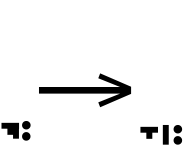
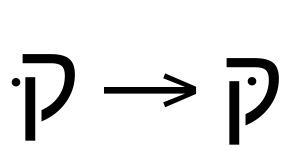
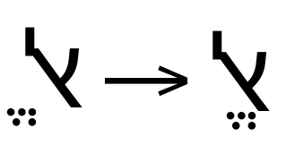
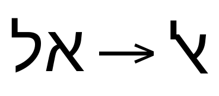
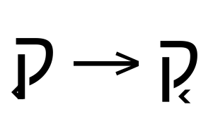

Hebrew script shaping in OpenType¶
This document details the general shaping procedure shared by all Hebrew script styles, and defines the common pieces that style-specific implementations share.
Table of Contents
The
<hebr>shaping model
General information¶
The Hebrew script is used to write multiple languages, including Hebrew, Yiddish, and Judezmo.
Hebrew is written (and, therefore, rendered) from right to left. Shaping engines must track the directionality of the text run when scripts of different direction are mixed.
The Hebrew script tag defined in OpenType is <hebr>. Apart from the
fact that Hebrew uses right-to-left directionality, the shaping
process for <hebr> is identical to the default script-shaping
model.
Note: The Letterlike Symbols block in Unicode includes four codepoints corresponding to mathematical symbols based on Hebrew letters.
These codepoints are not expected to occur within valid Hebrew text runs. In addition, because these codepoints are defined for usage in mathematical expressions, they are designated as using left-to-right directionality.
Terminology¶
OpenType shaping uses a standard set of terms for elements of the Hebrew script. The terms used colloquially in any particular language may vary, however, potentially causing confusion.
Base glyph or character is the standard term for a Hebrew character that is capable of taking a diacritical mark.
Most of the base characters in Hebrew are consonants, although some base characters are used to represent vowels in certain contexts.
Vowels that are not represented with base characters are frequently omitted from the text run entirely. Alternatively, such vowels may appear as marks called niqqud. Niqqud are also referred to as points in the Unicode standard.
Pronunciation marks, such as the dot used to distinguish “Shin” from “Sin” are also considered niqqud. Niqqud are typically positioned above or below the base character.
Dagesh is the term for a particular diacritic that alters the pronunciation of a consonant. The dagesh is distinctive for being positioned inside the consonant glyph. Other Hebrew diacritics are positioned either above or below the base character.
Hebrew also includes a sizable set of cantillation marks, in addition to vowel, diacritical, and pronunciation marks. Cantillation marks are also referred to as tropes.
Glyph classification¶
Because <hebr> text runs do not involve reordering or syllable
identification, Hebrew base characters do not require further
classification for script-shaping purposes.
Five Hebrew letters have special word-final forms. Each of these is encoded separately in the Hebrew block. They are regarded as contextual variants, not as distinct letters. The Hebrew block also includes several digraphs that are used only when writing the Yiddish languages.
Because these word-final forms and digraphs are separately encoded, fonts do not implement GSUB substitutions to provide access to them.
Mark classification¶
Because Hebrew text may include several types of mark (vowel niqqud, cantillation marks, pronunciation marks) positioned on a base character, sequences of adjacent marks may need to be reordered.
The Unicode standard defines a canonical combining class for each codepoint that is used whenever a sequence needs to be sorted into canonical order.
Hebrew marks all belong to standard combining classes. Most, but not all, cantillation marks are assigned to the generic below-base (220) or above-base (230) combining classes. Niqqud are assigned to distinct combining classes designed to enforce orthographically correct ordering:
Codepoint |
Combining class |
Glyph |
|---|---|---|
|
220 |
֑ Etnahta |
|
230 |
֒ Segol |
|
10 |
ְ Sheva |
|
12 |
ֲ Hataf Patah |
|
19 |
ֹ Holam |
|
23 |
ֿ Rafe |
The numeric values of these combining classes are used during Unicode normalization.
Character tables¶
The Hebrew block in Unicode contains the codepoints required to represent text in all languages written using Hebrew.
The Alphabetic Presentation Forms block in Unicode includes 46
additional codepoints for Hebrew. Included are several precomposed
combinations of base characters and marks and the “Alef Lamed”
ligature, any of which may occur in <hebr> text runs. Glyphs for
these presentation forms may be provided by fonts that do not
implement the corresponding mark-to-base and ligature features in
OpenType GSUB and GPOS tables.
The Alphabetic Presentation Forms block also includes a set of eight
“wide” variants of standard Hebrew characters (U+FB21 through
U+FB28) and a variant form of “Ayin” (U+FB20), for backwards
compatibility with retired file-encoding standards. New usage of these
codepoints is not recommended and they are unlikely to occur in
contemporary documents.
Consequently, unless a software application is required to support specific stores of documents that are known to have used these older encodings, the shaping engine should not be expected to handle any text runs incorporating these backwards-compatibility variant codepoints.
Separate character tables are provided for the Hebrew block, the
Hebrew letters included in the Alphabetic Presentation Forms block,
and for other miscellaneous characters that are used in <hebr> text
runs:
The tables list each codepoint along with its Unicode general category. For marks, the table lists the codepoint’s mark combining class. The codepoint’s Unicode name and an example glyph are also provided.
For example:
Codepoint |
Unicode category |
Mark class |
Glyph |
|---|---|---|---|
|
Letter |
0 |
א Alef |
|
Mark [Mn] |
24 |
ׁ Point Shin Dot |
Codepoints with no assigned meaning are designated as unassigned in the Unicode category column.
Other important characters that may be encountered when shaping runs
of Hebrew text include the dotted-circle placeholder (U+25CC), the
combining grapheme joiner (U+034F), the zero-width joiner (U+200D)
and zero-width non-joiner (U+200C), the left-to-right text marker
(U+200E) and right-to-left text marker (U+200F), and the no-break
space (U+00A0).
The dotted-circle placeholder is frequently used when displaying a vowel or diacritical mark in isolation. Real-world text documents may also use other characters, such as hyphens or dashes, in a similar placeholder fashion; shaping engines should cope with this situation gracefully.
The combining grapheme joiner (CGJ), zero-width joiner (ZWJ), and zero-width non-joiner (ZWNJ) may be used to alter the order in which adjacent marks are positioned during the mark-reordering stage, in order to adhere to the needs of a non-default language orthography.
The right-to-left mark (RLM) and left-to-right mark (LRM) are used by the Unicode bidirectionality algorithm (BiDi) to indicate the points in a text run at which the writing direction changes.
The no-break space may be used to display those codepoints that are defined as non-spacing (such as niqqud or cantillation marks) in an isolated context, as an alternative to displaying them superimposed on the dotted-circle placeholder.
The <hebr> shaping model¶
Processing a run of <hebr> text involves seven top-level stages:
Compound character composition and decomposition
Composing any Alphabetic Presentation forms
Applying the language-form substitution features from GSUB
Applying the typographic-form substitution features from GSUB
Applying the positioning features from GPOS
1. Compound character composition and decomposition¶
In this stage, the ccmp feature from GPOS is applied and the
resulting sequence of codepoints should be checked for correct mark
order.
Note: Shaping engines may have already applied Unicode normalization compose or decompose codepoints before beginning the shaping process. Due to the Alphabetic Presentation Forms composition in stage two, however, the
ccmpfeature and any necessary mark reordering must be performed here, as Alphabetic Presentation Forms are not handled by Unicode normalization.
1.1 ccmp¶
The ccmp feature allows a font to substitute
mark-and-base sequences with a pre-composed glyph including both the mark and the base (as is done in with a ligature substitution)
individual compound glyphs with the equivalent sequence of decomposed glyphs
If present, these composition and decomposition substitutions must be
performed before applying any other GSUB or GPOS lookups, because
those lookups may be written to match only the ccmp-substituted
glyphs.

1.2 Mark reordering¶
Sequences of adjacent marks must be reordered so that they appear in canonical order before the mark-to-base and mark-to-mark positioning features from GPOS can be correctly applied.
For <hebr> text runs, normalizing the sequence of marks using the
Unicode canonical combining class of each mark should be sufficient.
2. Composing any Alphabetic Presentation forms¶
If the active font includes glyphs for precomposed mark-and-base codepoints from the Alphabetic Presentation Forms block, these precomposed glyphs should be preferred over sequences of individual base glyphs and marks positioned with GPOS.
The codepoints in question are not included in the canonical Unicode compositions, so the shaping engine should substitute them at this stage, before proceeding with the shaping process.
The individual base and mark sequences that should compose to each precomposed Hebrew mark-and-base codepoint in the Alphabetic Presentation Forms block is listed in Composition column of the Alphabetic Presentation Forms character table.
For example:
Codepoint |
Unicode category |
Mark class |
Composition |
Glyph |
|---|---|---|---|---|
|
Letter |
0 |
|
יִ Yod With Hiriq |
|
Letter |
0 |
|
שׂ Shin With Sin Dot |
Two of the precomposed glyphs, “Shin With Dagesh And Shin Dot”
(U+FB2C) and “Shin With Dagesh And Sin Dot” (U+FB2D), have
multiple possible composing sequences. All of the other precomposed
glyphs in the block have a single composing sequence.
Note: the active font may implement these compositions in a
ccmplookup in GSUB, in which case this stage will involve no additional work.

3. Applying the language-form substitution features from GSUB¶
The language-substitution phase applies mandatory substitution features using the rules in the font’s GSUB table. In preparation for this stage, glyph sequences should be tagged for possible application of GSUB features.
The order in which these substitutions must be performed is fixed for all scripts implemented in the Hebrew shaping model:
locl
3.1 locl¶
The locl feature replaces default glyphs with any language-specific
variants, based on examining the language setting of the text run.
Note: Strictly speaking, the use of localized-form substitutions is not part of the shaping process, but of the localization process, and could take place at an earlier point while handling the text run. However, shaping engines are expected to complete the application of the
loclfeature before applying the subsequent GSUB substitutions in the following steps.
4. Applying the typographic-form substitution features from GSUB¶
The typographic-substitution phase applies optional substitution features using the rules in the font’s GSUB table.
The order in which these substitutions must be performed is fixed for all scripts implemented in the Hebrew shaping model:
liga
dlig
4.1 liga¶
The liga feature substitutes standard, optional ligatures that are on
by default. Substitutions made by liga may be disabled by
application-level user interfaces.

4.2 dlig¶
The dlig feature substitutes additional optional ligatures that are
off by default. Substitutions made by dlig may be disabled by
application-level user interfaces.

5. Applying the positioning features from GPOS¶
The positioning stage adjusts the positions of mark and base glyphs.
The order in which these features are applied is fixed for the Hebrew shaping model:
kern
mark
5.1 kern¶
The kern adjusts glyph spacing between pairs of adjacent glyphs.
5.2 mark¶
The mark feature positions marks with respect to base glyphs.
